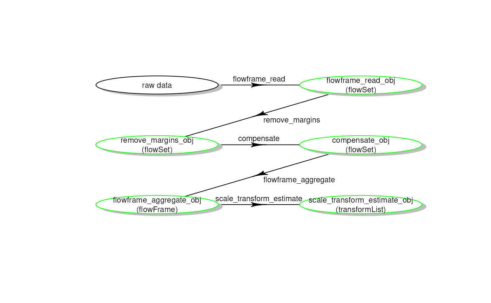
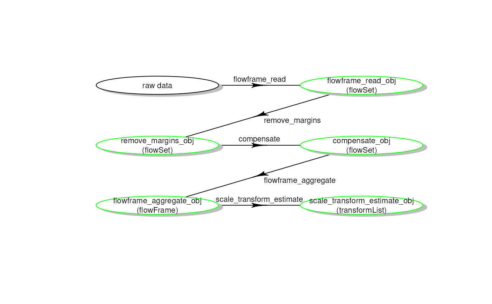

Plot a pipeline workflow from a CytoPipeline run
Arguments
- experimentName
the experiment name (representing a pipeline run) from which to extract the workflow
- whichQueue
"pre-processing" or "scale transform"
- sampleFile
in case 'whichQueue' is set to 'pre-processing, which sample file to look at. This can be a number or a character.
if whichQueue == "scale transform", the sampleFile is ignored
if NULL and whichQueue == "pre-processing", the sampleFile is defaulted to the first one belonging to the experiment
- path
the root path to look for the CytoPipeline experiment cache
Examples
# run CytoPipeline object first
outputDir <- base::tempdir()
rawDataDir <-
system.file("extdata", package = "CytoPipeline")
experimentName <- "OMIP021_PeacoQC"
sampleFiles <-
file.path(
rawDataDir,
list.files(rawDataDir, pattern = "Donor"))
jsonDir <- system.file("extdata", package = "CytoPipeline")
jsonPath <- file.path(jsonDir, "pipelineParams.json")
pipL2 <- CytoPipeline(
jsonPath,
experimentName = experimentName,
sampleFiles = sampleFiles)
suppressWarnings(execute(
pipL2,
rmCache = TRUE,
path = outputDir))
#> #####################################################
#> ### running SCALE TRANSFORMATION processing steps ###
#> #####################################################
#> Proceeding with step 1 [flowframe_read] ...
#> Proceeding with step 2 [remove_margins] ...
#> Removing margins from file : Donor1.fcs
#> Removing margins from file : Donor2.fcs
#> Proceeding with step 3 [compensate] ...
#> Proceeding with step 4 [flowframe_aggregate] ...
#> Proceeding with step 5 [scale_transform_estimate] ...
#> #####################################################
#> ### NOW PRE-PROCESSING FILE /__w/_temp/Library/CytoPipeline/extdata/Donor1.fcs...
#> #####################################################
#> Proceeding with step 1 [flowframe_read] ...
#> Proceeding with step 2 [remove_margins] ...
#> Removing margins from file : Donor1.fcs
#> Proceeding with step 3 [compensate] ...
#> Proceeding with step 4 [remove_doublets] ...
#> Proceeding with step 5 [remove_debris] ...
#> Proceeding with step 6 [remove_dead_cells] ...
#> Proceeding with step 7 [perform_QC] ...
#> Applying PeacoQC method...
#> Starting quality control analysis for Donor1.fcs
#> Calculating peaks
#> MAD analysis removed 30.75% of the measurements
#> The algorithm removed 30.75% of the measurements
#> Proceeding with step 8 [transform] ...
#> #####################################################
#> ### NOW PRE-PROCESSING FILE /__w/_temp/Library/CytoPipeline/extdata/Donor2.fcs...
#> #####################################################
#> Proceeding with step 1 [flowframe_read] ...
#> Proceeding with step 2 [remove_margins] ...
#> Removing margins from file : Donor2.fcs
#> Proceeding with step 3 [compensate] ...
#> Proceeding with step 4 [remove_doublets] ...
#> Proceeding with step 5 [remove_debris] ...
#> Proceeding with step 6 [remove_dead_cells] ...
#> Proceeding with step 7 [perform_QC] ...
#> Applying PeacoQC method...
#> Starting quality control analysis for Donor2.fcs
#> Calculating peaks
#> MAD analysis removed 24.38% of the measurements
#> The algorithm removed 24.38% of the measurements
#> Proceeding with step 8 [transform] ...
plotSelectedWorkflow(
experimentName = experimentName,
whichQueue = "pre-processing",
sampleFile = sampleFiles[1],
path = outputDir)
 plotSelectedWorkflow(
experimentName = experimentName,
whichQueue = "scale transform",
sampleFile = NULL,
path = outputDir)

plotSelectedWorkflow(
experimentName = experimentName,
whichQueue = "scale transform",
sampleFile = NULL,
path = outputDir)
